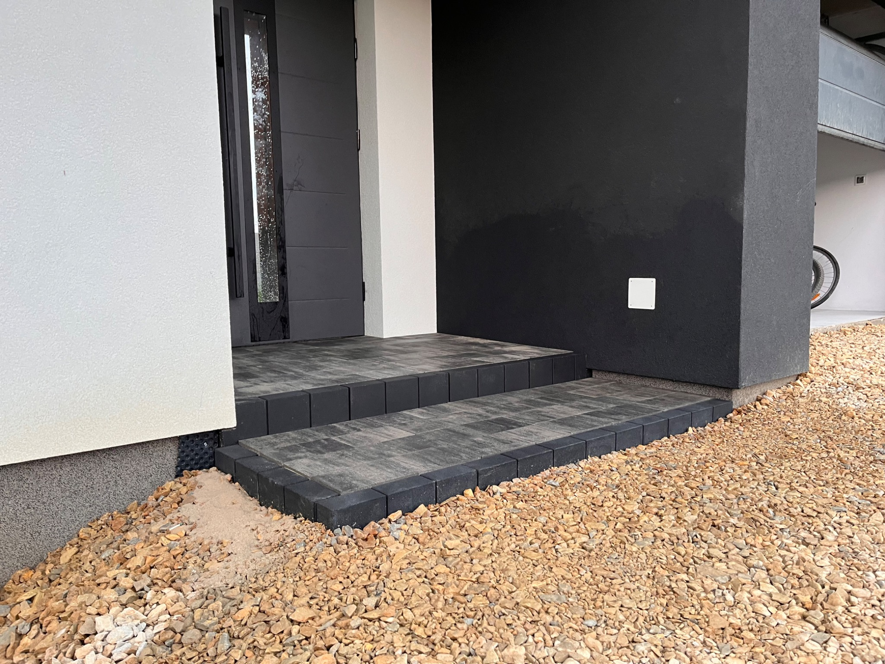
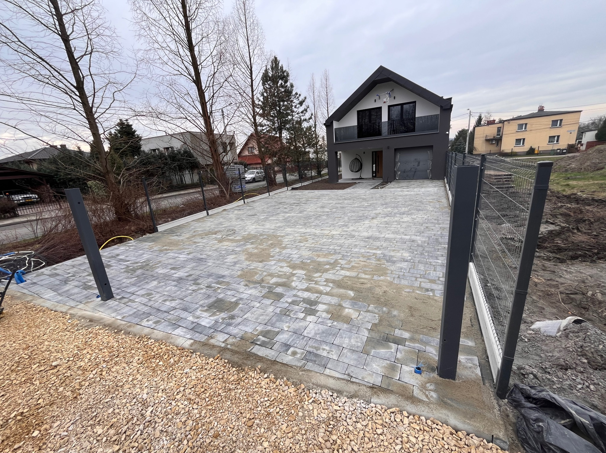
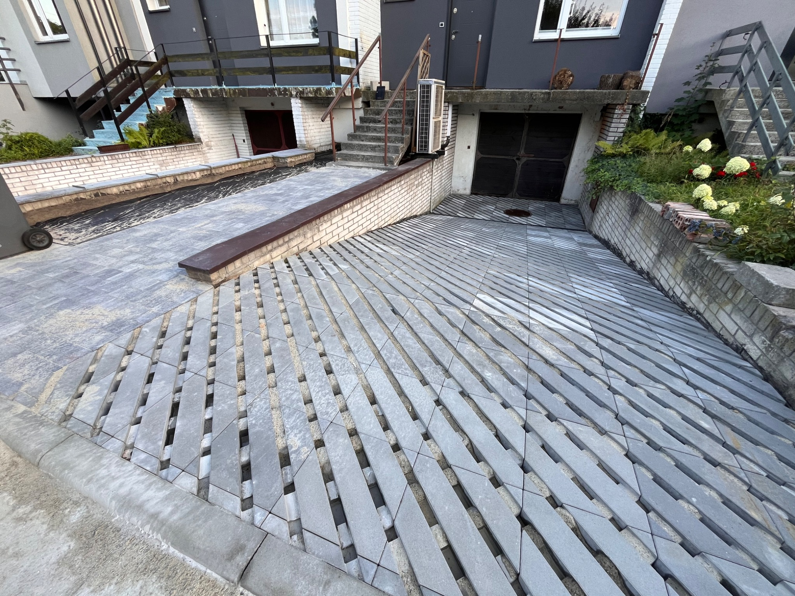
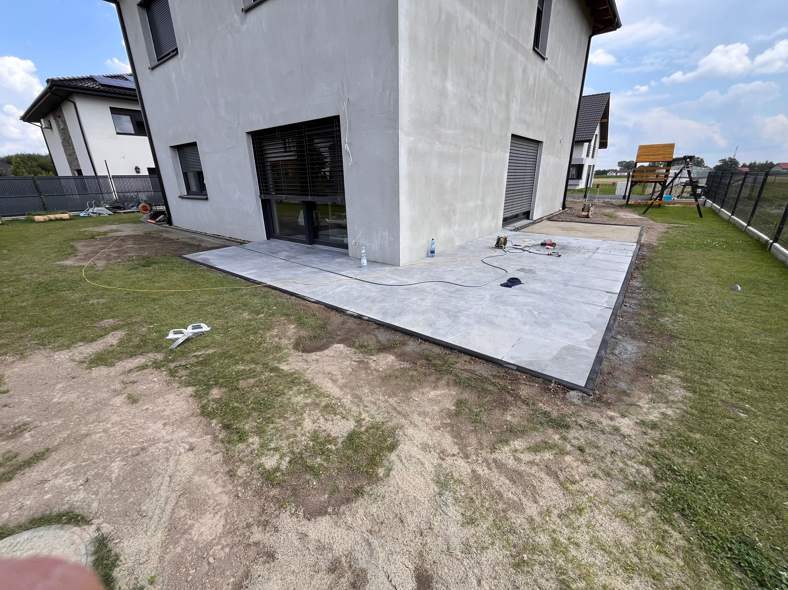
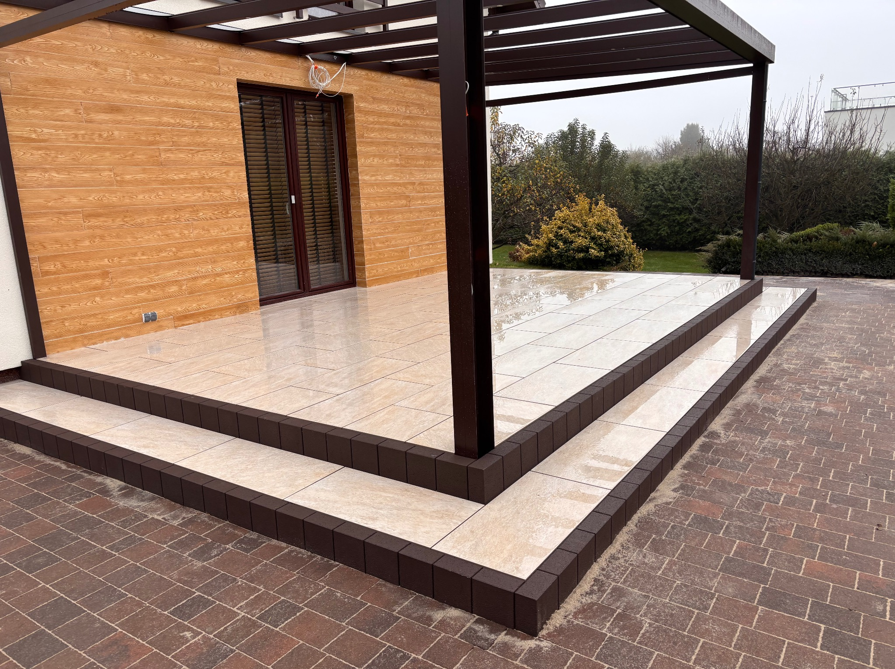
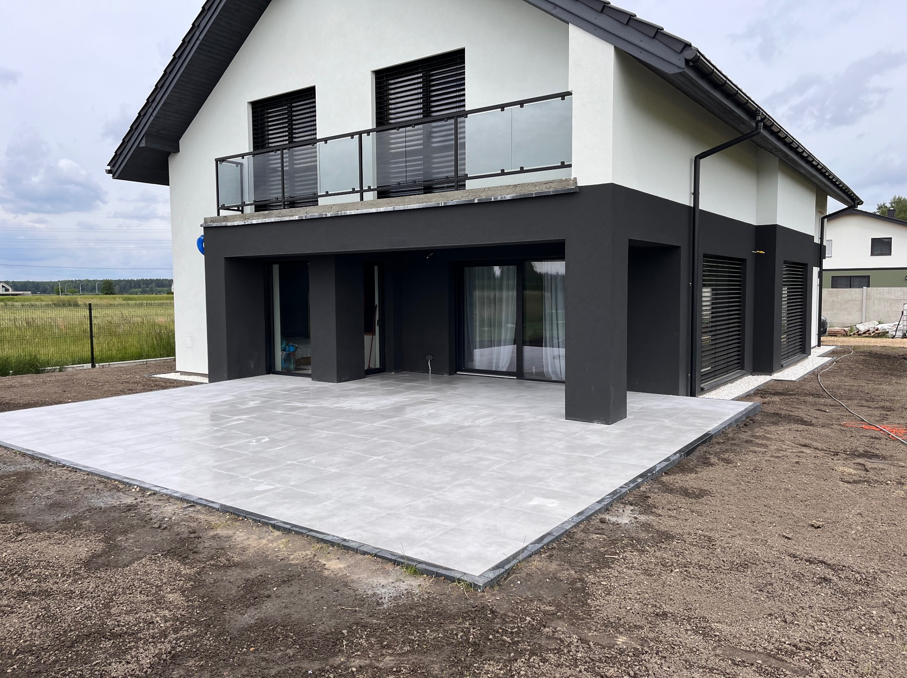
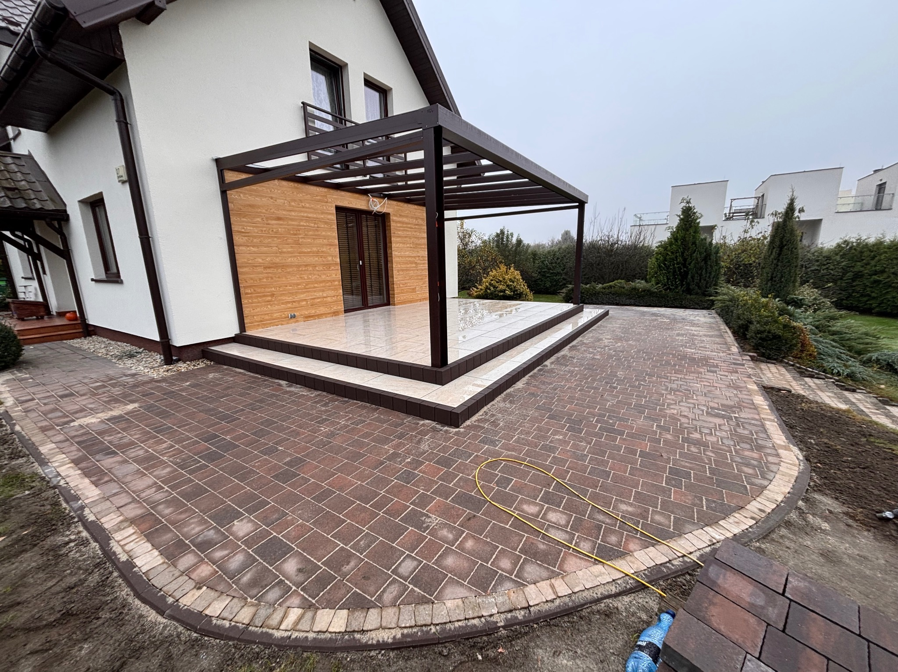
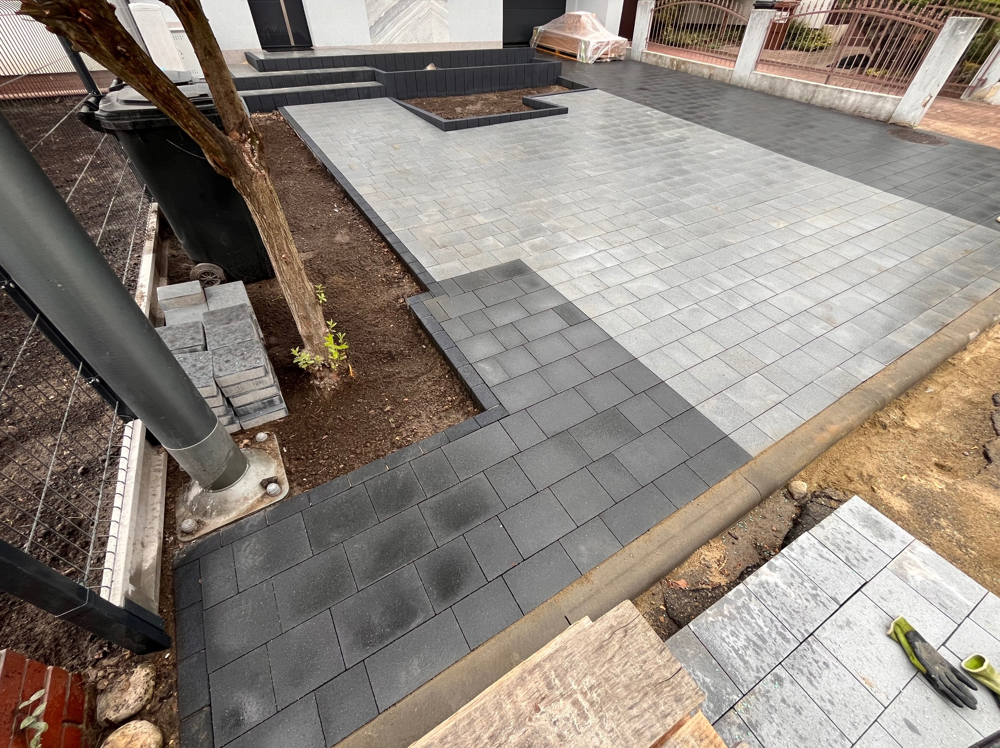
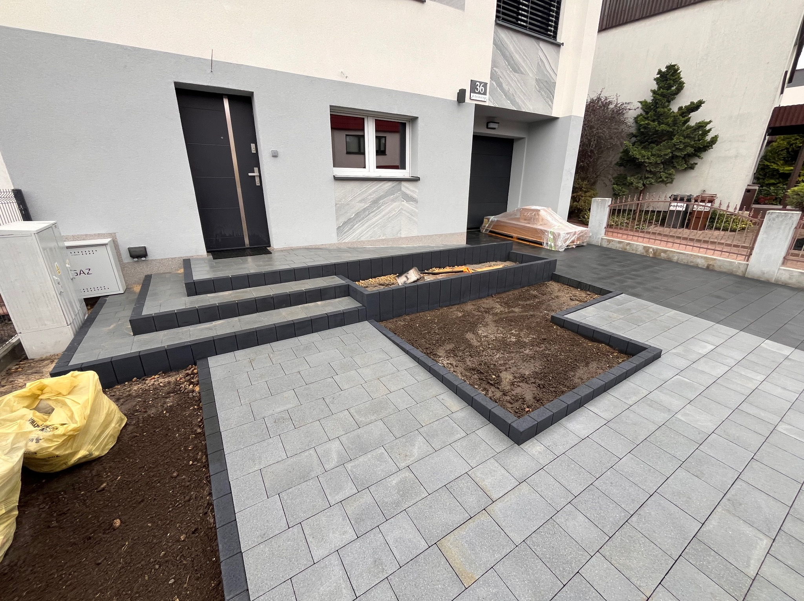

Co robimy?
Kompleksowe rozwiązania dla Twojej posesji — od projektu po realizację
Kostka Brukowa
Zniszczony podjazd lub błotnisty chodnik? Zamienimy go w trwałą, elegancką nawierzchnię.
- Podjazdy, tarasy i ścieżki
- Kostka brukowa i granitowa
- Gwarancja trwałości
Systemy Odwodnień
Woda zalewa Twoją działkę po deszczu? Zaprojektujemy i zamontujemy skuteczny drenaż.
- Drenaże opaskowe i liniowe
- Odwodnienia podjazdów
- Ochrona fundamentów
Zbiorniki na Deszczówkę
Chcesz zaoszczędzić na wodzie? Montujemy zbiorniki retencyjne do zbierania deszczówki.
- Montaż podziemny i nadziemny
- Ekologiczne rozwiązania
- Ponowne użycie wody
Bramy i Ogrodzenia
Stare ogrodzenie nie chroni posesji? Zamontujemy nowe bramy i ogrodzenia z automatyką.
- Bramy przesuwne i skrzydłowe
- Ogrodzenia panelowe
- Pełna automatyka
Jak wygląda współpraca?
Kontakt
Zadzwoń lub napisz — umówimy się na bezpłatne oględziny.
Wycena
Przyjeżdżamy, mierzymy i przygotowujemy szczegółową ofertę.
Realizacja
Wykonujemy prace terminowo, z gwarancją jakości.
Nie wiesz, czego dokładnie potrzebujesz? Dojedziemy, ocenimy i doradzimy — za darmo.
Umów bezpłatną wycenęNasze Realizacje
Zobacz efekty naszych prac — od podjazdów po kompleksowe systemy odwodnień









Podoba Ci się nasza praca? Twoja posesja może wyglądać tak samo!
Zapytaj o bezpłatną wycenęDoświadczenia
Solidny fundament
Twojej posesji
Jesteśmy dynamicznym zespołem fachowców z Tychów. Budujemy infrastrukturę na pokolenia, łącząc inżynieryjną precyzję z nowoczesną estetyką.
Firma MALKO BRUK S.C. została założona przez Kamila Malickiego oraz Piotra Kozłowskiego. Od początku naszej działalności stawiamy na techniczną perfekcję, solidność wykonania i bezkompromisową jakość.
Specjalizujemy się w profesjonalnym układaniu kostki brukowej i granitowej, projektowaniu i wdrażaniu kompleksowych systemów odwodnień, drenaży oraz montażu bram i ogrodzeń z automatyką. Posiadamy pełne zaplecze maszynowe, co gwarantuje pełną niezależność i terminowość na każdym etapie prac.
Własne zaplecze maszynowe
Niezależność sprzętowa pozwala nam na sprawną logistykę i szybkie tempo prac ziemnych i wykopów.
Kompleksowość realizacji
Działamy kompleksowo – od korytowania i drenażu, przez odwodnienie, aż po finalne ułożenie kostki i montaż ogrodzenia.
Certyfikowane materiały
Współpracujemy wyłącznie ze sprawdzonymi producentami kostki i kruszyw, gwarantując trwałość nawierzchni na lata.
Aktualności
Śledź nasze realizacje i bądź na bieżąco
Śledź nasze realizacje
na bieżąco
Dołącz do naszej społeczności na Facebooku i bądź pierwszym, który zobaczy najnowsze projekty.
- Nowe realizacje co tydzień
- Porady branżowe
- Szybki kontakt
Skontaktuj się z nami
Odpowiadamy szybko i konkretnie. Umów się na darmową wycenę.
Siedziba firmy
ul. Jankowicka 29M/1
43-100 Tychy
Dane rejestrowe
MALKO BRUK S.C.
NIP: 6463008811
REGON: 526900653